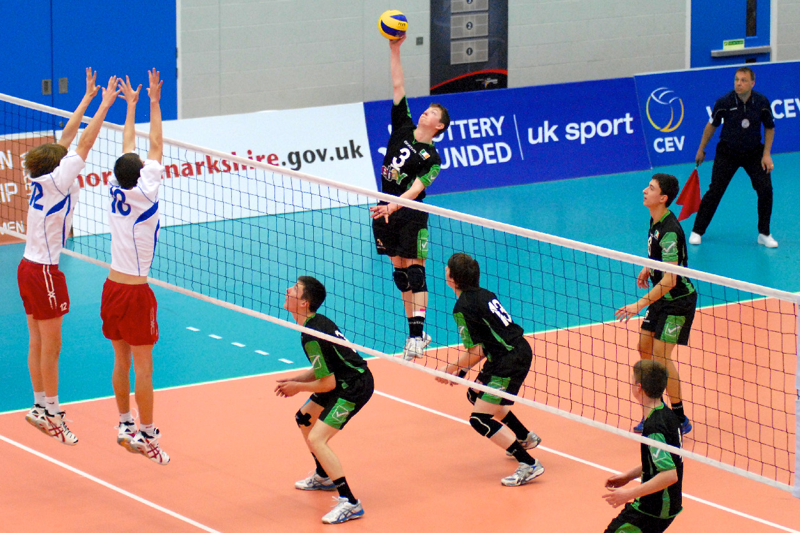

Volleyball
Volleyball, a game played by two teams, usually six players on one side, in which the players use their hands to bat a ball back and forth over a high net, attempting to get the ball to hit the court inside the play area of the opponents so they can return it. To stop this, a player on the losing team bats the ball and a teammate until it hits the floor of the court.

Skills of the volleyball
The six basic skills in volleyball pass, set, spike, block, dig and serve. Passing is also considered to be the most important skill in volleyball. If you are unable to pass the serve, then you will not ever be able to score a point for your side. For certain cases the significance of serving is undervalued.
Passing is also considered to be the most important skill in volleyball. If you are unable to pass the serve, then you will not ever be able to score a point for your side.
For certain cases the significance of serving is undervalued. Many coaches don't encourage players to serve vigorously and take advantage of this opportunity to give the team an advantage for points.
Perhaps blocking is the least taught skill in volleyball. Players will get away with poor blocking skills as not blocking would not damage the team as much as performing other skills in volleyball will be bad.
Digging is another talent that doesn't reflect on as much as other volleyball abilities.The setter position in volleyball is known as the most critical position. The setter effectively runs offense against the squad.

Volleyball blocking is described as deflecting the ball that comes from an attack hit by your opponent. ... A block strategy is used to deflect an attacker's ball going in. The blocker tries to push the ball back into the court of an opponent. Advanced volleyball teams can have various techniques for blocking them.

A volleyball pass is a finish with the intention of passing the ball to a teammate named a setter. The Team's first touch is the pass. The skill is exercised in passing ... It was on a served ball. On a ball where the opponent hits.

Serve – The first touch that rally begins is called a "serve" The player who is serving is called the server. A server normally uses one, opening hand to swing overhead, before bring the ball over the net from behind the end line. Less experienced players can use one closed fist to serve underhand.

The tactic used to bring the ball over the net to the opponent in such a way that the ball is not returnable is a volleyball spike or an assault.
The spike is achieved by pushing the arm in such a way that you angle the ball to land at the court side of your opponent's wall.
A spike is usually struck at a downward angle with great force.